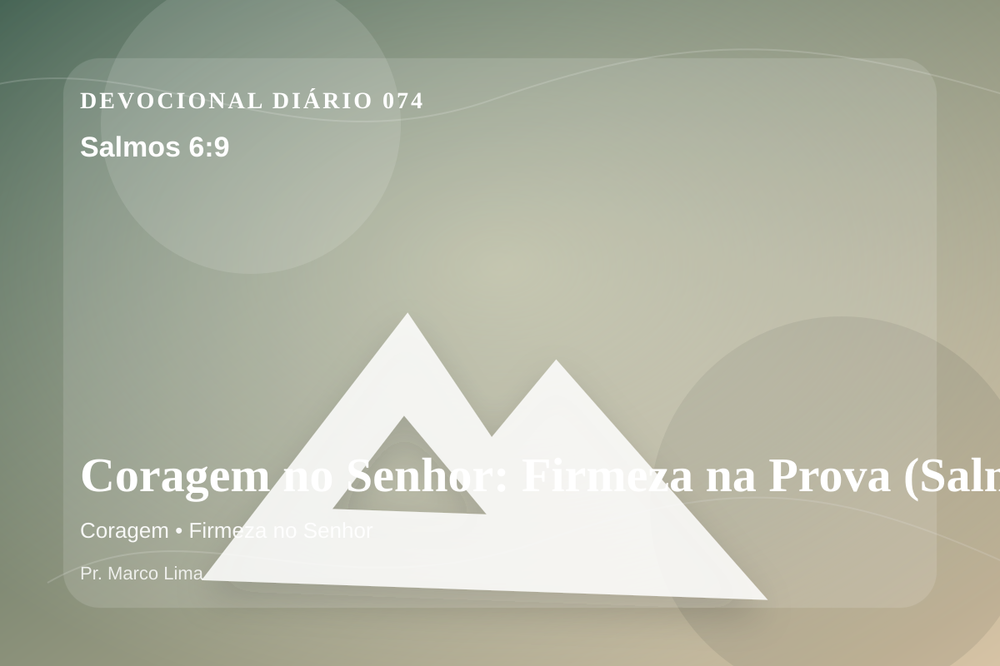

Coragem no Senhor: Firmeza na Prova (Salmos 6:9)
O SENHOR tem ouvido a minha súplica; o SENHOR aceitará a minha oração.
Pensamento
Nesta nova leitura da mesma passagem, observe como Deus forma fidelidade em meio à pressão. Ao meditar em Salmos 6:9, não procure apenas conforto rápido; permita que Deus ensine, corrija, console e chame você para mais perto de Jesus.
Salmos 6:9 chama o coração a ouvir Deus com reverência e responder com fé prática. A Palavra não foi dada para enfeitar pensamentos religiosos, mas para conduzir pessoas reais ao Senhor.
O tema de coragem precisa ser recebido com simplicidade e seriedade. A maturidade cristã começa quando a Palavra deixa de ser apenas inspiração e passa a governar escolhas. A coragem bíblica nasce da presença de Deus, não da autoconfiança. O Senhor não chama Seu povo a negar o medo, mas a caminhar apesar dele, sustentado pela promessa de que Ele está junto dos Seus.
Talvez o maior desafio de hoje não seja entender o versículo, mas permitir que ele exponha o que precisa ser entregue. Deus cura com verdade, não com distração espiritual.
Arrependimento não é apenas sentir peso na consciência; é voltar-se para Deus, abandonar o caminho que entristece o Senhor e confiar que a graça de Cristo é suficiente para perdoar e transformar.
Este é o evangelho que sustenta toda aplicação: Jesus Cristo morreu pelos pecadores, ressuscitou em vitória e chama cada pessoa a responder com fé, arrependimento e uma vida rendida ao Seu senhorio.
A salvação não nasce do esforço humano, mas da graça de Deus em Jesus. Quem crê não precisa fingir força; pode se render, confessar e recomeçar.
Antes de terminar, ore com simplicidade: “Senhor, mostra onde preciso me arrepender e dá-me fé para obedecer”. Depois, pratique o que Deus já deixou claro.
Para Praticar Hoje
- Leia Salmos 6:9 lentamente e destaque uma palavra ou expressão central do texto.
- Confesse a Deus um pecado, resistência ou frieza espiritual que esta Palavra revelou.
- Declare sua fé em Jesus Cristo e pratique hoje uma atitude concreta de arrependimento e obediência.
Oração
Senhor, onde o medo fala mais alto, lembra-me de quem Tu és. Salmos 6:9 me ensina que a coragem não é ausência de medo, mas presença de Deus no meio dele. Fortalece minha fé para caminhar onde Tu envias. Aproxima meu coração de Ti hoje.
{kind=link}